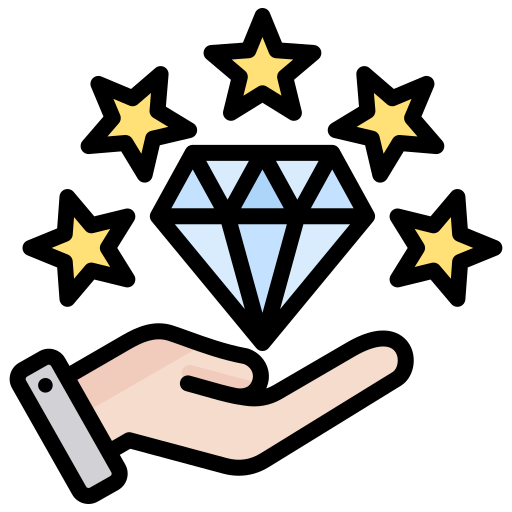

About Us

Collins Chan
Hello! I'm Collins, a passionate computer science student with a keen interest in frontend development. With over 2 years of experience in the field, I have honed my skills in creating visually appealing and user-friendly websites. I am currently pursuing my Bachelor's degree in Computer Science at the University of Macau, where I have gained a solid foundation in programming and web development. I am eager to apply my knowledge and creativity to contribute to innovative projects and further develop my expertise in the industry.
Collins' Portfolio →
Bruce Xu
Hi! My name is Bruce, Xu Wu Xiyuan. I am a junior student majoring in computer science at the University of Macau. I have two years of research experience working in the university laboratory. I have accumulated solid practical skills in programming, data analysis and basic algorithms. Besides academic studies, I keep a proactive learning professional knowledge to improve my comprehensive abilities. I am confident and willing to devote myself to further study and practical projects in the computer science field.
Bruce's Portfolio →
Our Values and Beliefs
We believe that integrity, innovation, and collaboration form the cornerstone upon which professional success is built. We believe that integrity enables us to deliver honest, transparent, and reliable work. We believe that innovation inspires us to think out of the box and push boundaries. We believe in inclusivity and accessibility in web design, ensuring that digital platforms treat all users equally. These core values shape us into developers who prioritize both technical excellence and human-centered design.
Our Career Aspirations
Our career aspiration is concerned is to become senior web developers and work within a global enterprise, where we can make significant contributions to projects that have the potential to reach millions of people. We hope to reach the position where we can lead development teams, mentor junior programmers, and have the power to influence the direction that digital solutions take. By doing this, we hope to not only move our careers forward but also make significant contributions to the digital world as far as modern businesses are concerned.
Our Interests and Hobbies
We like to write programs, hanging out together whenever we have free time.
Individually, Collins likes to
- -> play music games;
- -> listen to chill hip-hop songs.
...and Bruce likes to
- -> play all kinds of sports;
- -> enjoy coffee at break time.